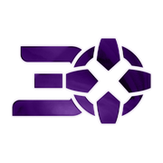

Logos and favicons belong to their owners and are shown here for reference. This is not an endorsement and it is not a license to use the mark.
IGN is the games and entertainment site at ign.com. The red “IGN” plate in the tab is the icon review bookmarks use, not a game publisher’s logo.
Checked 12 November 2026 against ign.com. HTML came from https://www.ign.com/ (HTTP 200). Icon link tags: shortcut icon → https://kraken.ignimgs.com/favicon.ico; icon 48x48 → https://kraken.ignimgs.com/favicon-48x48.png; icon 32x32 → https://kraken.ignimgs.com/favicon-32x32.png; icon 16x16 → https://kraken.ignimgs.com/favicon-16x16.png; apple-touch-icon 180x180 → https://kraken.ignimgs.com/apple-touch-icon.png.
The favicon.ico URL is https://kraken.ignimgs.com/favicon.ico. The saved file favicon.ico is 15406 bytes. Directory sizes: 16×16, 32×32, 48×48.
The apple-touch-icon URL is https://kraken.ignimgs.com/apple-touch-icon.png, measured at 180×180 png.
Brand colour #bf1313 comes from the theme-color meta tag.
Largest measured bitmap: png-512x512-06.png at 512×512 (png, 98558 bytes) from https://www.ign.com/icon-512x512.png.
Saved facts
favicon.ico URL: https://kraken.ignimgs.com/favicon.ico
apple-touch-icon URL: https://kraken.ignimgs.com/apple-touch-icon.png

Brand colour #bf1313 — theme-color meta tag.
Preview
The preview uses the static snapshot png-180x180-01.png, measured at 180×180. The boxes scale that same saved file in the browser. They are not extra downloads and they do not call the favicon API.

Download
Every button is a file saved from the live response on the check date. Nothing here was resized on a server, and the buttons point at those static files.
png-180x180-01.png favicon.ico png-48x48-03.png png-32x32-04.png png-16x16-05.png png-512x512-06.png png-512x512-07.png png-192x192-08.png


Files and measured dimensions
| File | Format | Dimensions | How measured | Bytes | Found via | Source URL |
|---|---|---|---|---|---|---|
| png-180x180-01.png | png | 180×180 | PNG IHDR | 16264 | apple-touch-icon | https://kraken.ignimgs.com/apple-touch-icon.png |
| favicon.ico | ico | 16×16, 32×32, 48×48 | ICO directory | 15406 | shortcut icon | https://kraken.ignimgs.com/favicon.ico |
| png-48x48-03.png | png | 48×48 | PNG IHDR | 3103 | link | https://kraken.ignimgs.com/favicon-48x48.png |
| png-32x32-04.png | png | 32×32 | PNG IHDR | 1683 | link | https://kraken.ignimgs.com/favicon-32x32.png |
| png-16x16-05.png | png | 16×16 | PNG IHDR | 569 | link | https://kraken.ignimgs.com/favicon-16x16.png |
| png-512x512-06.png | png | 512×512 | PNG IHDR | 98558 | manifest | https://www.ign.com/icon-512x512.png |
| png-512x512-07.png | png | 512×512 | PNG IHDR | 52222 | manifest | https://www.ign.com/icon-maskable-512x512.png |
| png-192x192-08.png | png | 192×192 | PNG IHDR | 17963 | manifest | https://www.ign.com/icon-192x192.png |


Link tags found
| rel | sizes | type | color | href |
|---|---|---|---|---|
| shortcut icon | — | image/x-icon | — | https://kraken.ignimgs.com/favicon.ico |
| icon | 48x48 | image/png | — | https://kraken.ignimgs.com/favicon-48x48.png |
| icon | 32x32 | image/png | — | https://kraken.ignimgs.com/favicon-32x32.png |
| icon | 16x16 | image/png | — | https://kraken.ignimgs.com/favicon-16x16.png |
| apple-touch-icon | 180x180 | — | — | https://kraken.ignimgs.com/apple-touch-icon.png |
Manifest icons as declared
These sizes are the strings in the manifest. They are not a measurement unless the same URL was downloaded and appears in the file table.
| src | sizes | type | purpose |
|---|---|---|---|
| https://www.ign.com/icon-192x192.png | 192x192 | image/png | any |
| https://www.ign.com/icon-512x512.png | 512x512 | image/png | any |
| https://www.ign.com/icon-maskable-512x512.png | 512x512 | image/png | maskable |
How this compares with a normal favicon set
A site you publish yourself usually needs a different set from the one IGN happens to ship: 16×16, 32×32 and 48×48 in one favicon.ico, a 180×180 apple-touch icon, and 192×192 plus 512×512 manifest PNGs. That chart, including 96×96, maskable icons, Windows tiles and SVG, is the favicon dimensions guide. Use IGN’s files as a reference, then build your own with the PNG to favicon converter.
Related site icons
- Minecraft favicon (minecraft.net)
- Nintendo favicon (nintendo.com)
- PlayStation favicon (playstation.com)
- Riot Games favicon (riotgames.com)
- Roblox favicon (roblox.com)
- Steam favicon (steampowered.com)
FAQ
What is the IGN favicon.ico URL?
The favicon.ico is at https://kraken.ignimgs.com/favicon.ico (15406 bytes, directory sizes 16×16, 32×32, 48×48).
What are the IGN favicon dimensions?
The pixel sizes below were read from the files, not from a generic size chart. png-180x180-01.png: 180×180 (PNG IHDR) favicon.ico: 16×16, 32×32, 48×48 (ICO directory) png-48x48-03.png: 48×48 (PNG IHDR) png-32x32-04.png: 32×32 (PNG IHDR) png-16x16-05.png: 16×16 (PNG IHDR) png-512x512-06.png: 512×512 (PNG IHDR) png-512x512-07.png: 512×512 (PNG IHDR) png-192x192-08.png: 192×192 (PNG IHDR)
What apple-touch-icon does IGN publish?
The apple-touch-icon is at https://kraken.ignimgs.com/apple-touch-icon.png (16264 bytes, 180×180 png), saved as png-180x180-01.png.
What brand colour does the IGN favicon page record?
The recorded brand colour is #bf1313, from the theme-color meta tag.
Which icon files were saved for IGN?
On 12 November 2026 these image files were downloaded for ign.com: png-180x180-01.png (png, 16264 bytes, 180×180); favicon.ico (ico, 15406 bytes, 16×16, 32×32, 48×48); png-48x48-03.png (png, 3103 bytes, 48×48); png-32x32-04.png (png, 1683 bytes, 32×32); png-16x16-05.png (png, 569 bytes, 16×16); png-512x512-06.png (png, 98558 bytes, 512×512); png-512x512-07.png (png, 52222 bytes, 512×512); png-192x192-08.png (png, 17963 bytes, 192×192).
May I use the IGN icon on my own site?
No. Logos and favicons belong to their owners and are shown here for reference so you can see the real format and dimensions. For your own site, make a file with the PNG to favicon converter or download a site you control.
Look up another domain in the favicon downloader, fetch several at once with the bulk favicon downloader, or go back to the site favicon index.